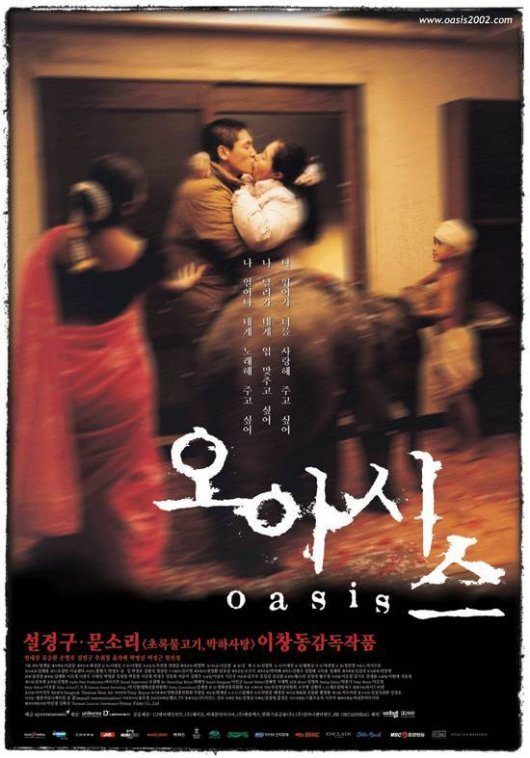
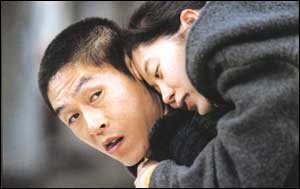

| |
|
|
13. Februar 2006
"Oasis" (Kor 2002)
Awards: 4 Hauptpreise in Venedig 2002 plus 7 andere Festivalpreise. Für die kurze Vorstellung des koreanischen Filmwunders in den letzten Jahren (1999-2004) haben wir für den Einstieg das bewegendste und stärkste Drama gewählt. Der Regisseur Lee Chang-dong ist in Korea der renom- mierteste Schriftsteller und Filmemacher, und war bis vor kurzem auch Kulturminister. Vom Inhalt darf man nicht zu viel verraten, außer vielleicht dass es eine ungewöhnliche Liebesgeschichte zweier gesellschaftlicher Aussenseiter ist, deren Sympathie sich der Zuschauer erst erarbeiten muß.
2002 war der Höhepunkt für den
koreanischen Film (wie nebenbei auch für den argentinischen
Film), Höhen die an goldene Filmzeiten in vergangenen
großen Epochen anderswo erinnern. 2002 war allerdings auch der
Beginn des langsamen Abstiegs des koreanischen Filmwunders, das
hierzulande nur mit Old Boy
in Verbindung gebracht werden kann. Wir hoffen vorerst die sieben
wichtigsten koreanischen Filme zeigen zu können, um das schiefe
Bild verursacht durch Kim Ki-Duk, die leidigen asiatischen
Horror-, Manga und Martial Arts Filme, oder noch schlimmer durch
übersentimentalen Sleeper Kitsch des jüngeren Hong Kong und
Taiwan Kinos, wie sie auf den Festivals vorherrschen, etwas
zurechtrücken zu können. Aus einer
Szene, die aus dem Nichts kommend als die aufstrebendste und
qualitativ beste der letzten Jahre gilt.
"2002 was the year when many investors lost confidence in the industry,
following the spectacular failures of big-budget genre films Yesterday, R U Ready? and Resurrection of the Little Match Girl.
With budgets soaring higher and higher, even many films that did well
at the box-office ended up losing considerable sums of money. As a
result, many of the venture capital companies who had rushed into the
industry in 2000 and 2001 decided to move out, leaving many production
companies short of cash. Although long-term, the bursting of the
investment bubble was probably a good thing, in the short term it
caused considerable turmoil in the industry and led to the cancellation
of many projects.
Artistically, however, Korean cinema was in top form. Several Korean
films won prestigious awards at overseas festivals, including Chihwaseon (Best Director, Cannes),
Oasis (Best Director and
Best
New Actor/Actress, Venice), and My
Beautiful Girl, Mari
(Grand Prix, Annecy International Animated Film Festival). Other films
were less recognized, but no less accomplished, such as Park
Chan-wook's Sympathy for Mr.
Vengeance and Hong Sang-soo's Turning
Gate.
For better or for worse, the historical development of Korean cinema has been linked to the genre of melodrama, in much the same way that people think of martial-arts films in relation to Hong Kong. It's not just that there have been a large number of popular or influential melodramas produced throughout Korean film history; the genre has influenced directors in other ways as well. Green Fish and Peppermint Candy, the first two films by novelist-turned-director Lee Chang-dong, both contain highly emotional scenes, but the films strive to avoid melodramatic influences so much that you could consider them to be 'anti-melodramas'.
 For his third film Oasis, Lee seemingly changed course and decided to make a love story: a melo- drama rooted in the relationship between a social misfit just released from prison and a woman with cerebral palsy. What seems on the surface to be a depressing tale of squalor is actually one of the most amazing films Korea has produced in years, a triumph for Lee and his cast.
Oasis begins in mid-winter when a man named Jong-du (Sol Kyung-gu) is released from prison wearing summer clothes. He served time for a drunk driving accident in which another man is killed, but his decreased mental capacities seem to leave him unable to understand how the incident has impacted others. After a half-hearted reunion with his family, he takes a visit to the home of the man he killed." (Darcy Paquet - koreanfilm.org)
imdb User Comments:
- "All I can say is WOW. Maybe the best movie I have ever seen, ... definitely
in the Top Ten.".
- "I rated "Oasis" as a MUST SEE. ..."
- "This is one of the most beautiful and sensible films you can ever see. ..."
- "I highly recommend this film."
"The director says this is a film about "border" as well as "communication." And in order to show the difficulty of communication and/or of going across the border, he tried to make Jong-du an abominable and disgusting person, especially at the beginning of the film. If you feel uncomfortable when you start to watch this film, you should consider that such discomfort was intentional even though the behaviors by Jong-du seem to be extremely violent and selfish. And you should also be patient until the "miraculous" moment of the "mutation" (from vulgarity to holiness) comes. You will certainly forget about the discomfort you had felt.
And this is naturally a film about Love. It shows us just "one of" the forms of love, should I probably say, since the one shown in this film is too special and peculiar, but still I am tempted to say: "This is the Love." ... -- mitsounob from Yokohama, Japan
Alle wichtigen Festivals weltweit: Venedig, Cannes, Toronto, Rotterdam, Karlovy Vary, Viennale, ...
Kor 2002, R+B: Lee Chang-Dong 이창동,
D: Sol Kyung-gu 설경구, Moon So-ri 문소리,
132min, kor. meUT
19:30 Uhr, Space04 Kunsthaus Graz, € 5.-